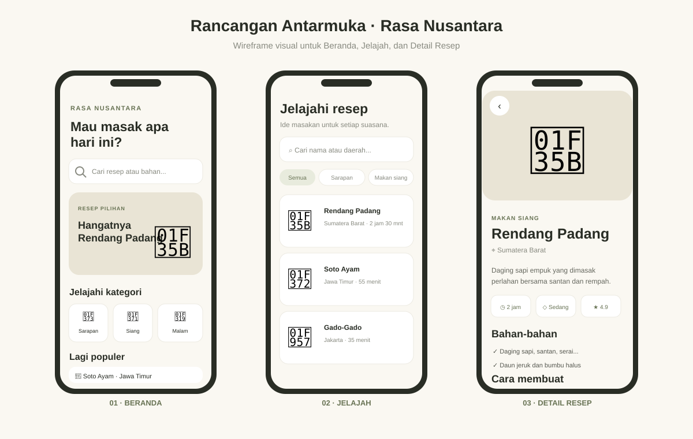

LAPORAN UJIAN TENGAH SEMESTER
MOBILE PROGRAMMING
(Aplikasi Resep Makanan Rasa Nusantara)
Rasa Nusantara adalah aplikasi resep makanan yang menyajikan inspirasi masakan Indonesia. Pengguna dapat melihat resep pilihan, mencari masakan berdasarkan nama atau daerah, menyaring daftar berdasarkan kategori, membaca petunjuk memasak, dan menyimpan resep favorit.
Tema kuliner dipilih karena resep merupakan informasi sehari-hari yang berguna dan mudah dipahami melalui perangkat mobile. Daftar resep yang terstruktur membantu pengguna menemukan ide masakan, sementara detail bahan dan langkah memasak dapat dibaca langsung ketika menyiapkan hidangan.
Pengembangan aplikasi ini relevan dengan pemrograman mobile karena menerapkan antarmuka yang dapat digulir, navigasi ant halaman, interaksi pencarian dan filter, serta penyajian data pada layar berukuran kecil. Data contoh disimpan lokal untuk tahap rancangan dan dapat disambungkan ke API ketika layanan server tersedia.
Antarmuka dirancang dengan tema masakan Nusantara dan prinsip clean interface. Latar krem #FAF8F2 memberi kesan hangat, aksen hijau zaitun #687354 dipakai untuk tombol dan penanda aktif, sedangkan kartu putih membedakan kelompok informasi dari latar.
Ikon Material digunakan untuk pencarian, kategori, bookmark, waktu, dan navigasi. Ilustrasi emoji makanan menjadi penanda visual tiap resep. Tipografi sans serif dengan judul tegas dan teks isi yang lebih kecil membentuk hierarki informasi. Tata letak memakai kartu, jarak antarelemen yang konsisten, serta area gulir untuk daftar yang panjang.
Gambar berikut adalah rancangan awal mandiri yang dibuat sebagai acuan visual untuk tiga halaman utama aplikasi.

Gambar 1. Rancangan awal antarmuka Rasa Nusantara.
Aplikasi memiliki tiga halaman utama yang dipilih melalui NavigationBar: Beranda, Jelajah, dan Tersimpan. Beranda menampilkan resep pilihan dan kategori; Jelajah menampilkan pencarian, filter kategori, serta daftar resep; Tersimpan menampilkan resep yang ditandai. Pemilihan kartu resep membuka halaman Detail Resep melalui Navigator.push.
Widget yang digunakan antara lain Scaffold, SafeArea, CustomScrollView, SliverList, ListView, Row, Column, Container, Card, ChoiceChip, dan TextField. Konten dibatasi maksimal 760 piksel pada layar lebar dan mengikuti lebar layar ponsel.
NavigationBar(
selectedIndex: _tab,
onDestinationSelected: (index) => setState(() => _tab = index),
destinations: const [/* Beranda, Jelajah, Tersimpan */],
)
_navigatorKey.currentState?.push(MaterialPageRoute<void>(
builder: (_) => RecipeDetailPage(
recipe: recipe,
isSaved: _saved.contains(recipe.id),
onToggleSaved: () => _toggleSaved(recipe),
),
));
Lima resep lokal berada pada lib/data/sample_recipes.dart. Model Recipe di lib/models/recipe.dart menyediakan fromJson dan toJson, sehingga bentuk data sudah dapat dipetakan ke payload JSON dari API.
factory Recipe.fromJson(Map<String, dynamic> json) => Recipe( id: json['id'] as String, name: json['name'] as String, category: json['category'] as String? ?? 'Lainnya', // properti resep lainnya dipetakan dari JSON );
Tempatkan screenshot hasil aplikasi pada area yang disediakan. Screenshot dapat ditambahkan dengan mengganti kotak placeholder di file HTML laporan.
Hasil implementasi mengikuti konsep rancangan dengan latar krem, aksen hijau zaitun, kartu berwarna putih, ikon yang sesuai fungsi, dan hierarki teks yang jelas. Rancangan awal menampilkan susunan Beranda, Jelajah, dan Detail; susunan tersebut diterapkan menjadi halaman Flutter dengan komponen yang dapat digulir dan elemen interaktif.
Navigasi utama memakai NavigationBar, sedangkan perpindahan menuju detail memakai Navigator.push. Pencarian, filter kategori, dan bookmark memberi respons langsung pada data lokal. Pemeriksaan flutter analyze --no-pub tidak menemukan masalah dan build Flutter Web berhasil dibuat.
Konten utama dibatasi lebarnya di layar besar dan dapat mengikuti lebar ponsel. Tampilan masih dapat dikembangkan dengan gambar hidangan, penyimpanan favorit permanen, dan data dari API.
Aplikasi Rasa Nusantara berhasil dirancang dan diimplementasikan menggunakan Flutter dan Dart. Aplikasi menyediakan halaman Beranda, Jelajah, Detail Resep, dan Tersimpan dengan navigasi antarlayar. Widget Flutter digunakan untuk menyusun layout, menampilkan data resep, serta menerima interaksi pencarian, filter kategori, dan penyimpanan favorit.
Data dummy telah dipisahkan dari antarmuka dan menggunakan model yang mendukung pemetaan JSON sebagai dasar integrasi API. Analisis statis bersih dan build Flutter Web berhasil. Rancangan UI mandiri digunakan sebagai acuan visual implementasi.
Pengembangan selanjutnya dapat mencakup integrasi API, penyimpanan favorit secara permanen, foto resep, serta pengujian pada berbagai ukuran perangkat.
Repository: https://github.com/mustikaprmataputrii/resep-nusantara
Branch: main · Commit project: a29f7d4.